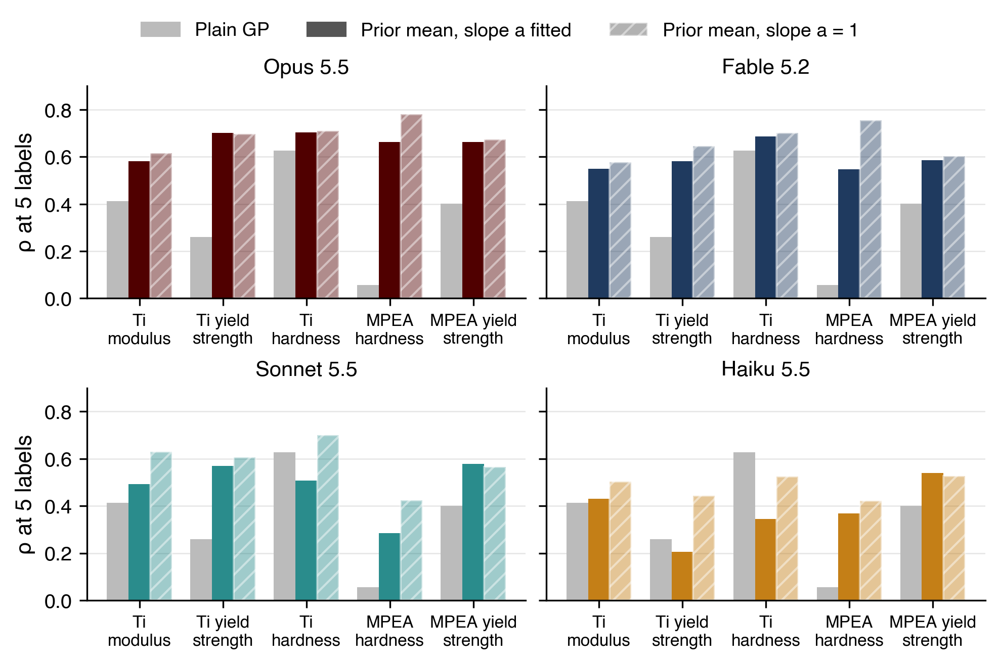

MATERIALS SCIENCE & ENGINEERING
TEXAS A&M UNIVERSITY
Department of Materials Science and Engineering
52

MPEA hardness, 5 labels
plain GP: 0.06
Opus: 0.66 fitted, 0.78 one
Fable: 0.55 fitted, 0.76 one
Ti hardness, Haiku
0.34 fitted, 0.52 one